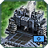
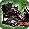

Patch 3678 beta
Welcome to the patchnotes for the 3678 beta patch.
Intro Text
We wish you good luck and much fun playing with the new patch!
-- The Balance Team
Reclaim
 Reclaim
Reclaim
Text
- Reclaim time of unit wrecks has been doubled.
- Engineers will no longer split tree groups when using automated reclaim commands such as patrol or attack move.
- The mass and energy value of split trees has been increased by 5%.
Miscellaneous
 Refracting Chronotron Amplifier
Refracting Chronotron Amplifier
Text
- Mass cost:
3500→ 4800 - Energy cost:
300000→ 270000 - AOE:
2→ 2.7 - Additional damage:
400→ 750
 Janus
Janus
Text
- DoT Pulses:
15→ 10 - Fixed a bug that made cluster bombs gain a new target halfway through a run.
 Veterancy
Veterancy
Text
- Reduced the amount of instantly gained HP for experimental units by 50%.
Structures
 Aeon T1 Building HP
Aeon T1 Building HP
- T1 Land Factory:
3100→ 3200 - T1 Air Factory:
3100→ 3200 - T1 Naval Factory:
3100→ 3200
 Aeon T2 Building HP
Aeon T2 Building HP
- Land/Air Factory HQ:
6200→ 6400 - Naval Factory HQ:
10000→ 12800 - Land/Air Support Factory:
3100→ 3200 - Naval Support Factory:
5000→ 6400
 Aeon T3 Building HP
Aeon T3 Building HP
- Land/Air Factory HQ:
12400→ 12800 - Naval Factory HQ:
20000→ 21000 - Land/Air Support Factory:
6200→ 6400 - Naval Support Factory:
13000→ 12400
 UEF Building HP
- T1 Naval Factory:
4000→ 4500 - T2 Naval Factory HQ:
13000→ 16000 - T2 Naval Naval Factory:
6500→ 8000 - T3 Naval Support Factory:
17000→ 16000
 Cybran T1 Building HP and Regeneration
- Air/Land Factory HP:
2500→ 2750 - Air/Land Factory Regen:
6→ 9 - Naval Factory HP:
2500→ 3200 - Naval Factory Regen:
6→ 10 - Power Generator Regen:
6→ 5 - Hydrocarbon Power Plant Regen:
4→ 3
 Cybran T2 Building HP and Regeneration
Cybran T2 Building HP and Regeneration
- Air/Land Factory HQ HP:
5000→ 5500 - Naval Factory HQ HP:
8000→ 11000 - Naval Factory HQ HP Regen:
30→ 40 - Air/Land Support Factory HP:
2500→ 2750 - Air/Land Support Factory Regen:
6→ 9 - Naval Support Factory HP:
4000→ 5500 - Naval Support Factory Regen:
12→ 20
 Cybran T3 Building HP and Regeneration
Cybran T3 Building HP and Regeneration
- Air/Land Factory HQ HP:
10000→ 11000 - Naval Factory HQ HP:
16000→ 17000 - Air/Land Support Factory HP:
5000→ 5500 - Naval Support Factory Regen:
30→ 40
 Seraphim Building HP
Seraphim Building HP
- T1 Naval Factory:
3500→ 4000 - T2 Naval Factory HQ:
11000→ 14000 - T3 Naval Factory HQ:
22000→ 23000 - T2 Naval Support Factory:
5500→ 7000 - T3 Naval Support Factory:
15000→ 14000